Exercise 51： Let ECAD be a trapezoid with CA//ED and CA=2ED. E, D are the midpoints of FA, PB, respectively. AB=PA. Prove that CF⊥PB.
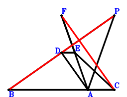
\(\because \) D is the midpoint of PB \(\therefore \small\overrightarrow{AD}=\dfrac{\small\overrightarrow{AB}}{2} + \dfrac{\small\overrightarrow{AP}}{2}\).\(\because \) CA//ED and CA=2ED \(\therefore \small\overrightarrow{AE}=\dfrac{\small\overrightarrow{AB}}{2} + \dfrac{\small\overrightarrow{AC}}{2} + \dfrac{\small\overrightarrow{AP}}{2}\).\(\because \) E is the midpoint of FA \(\therefore \small\overrightarrow{AF}=2 \small\overrightarrow{AE}=\small\overrightarrow{AB} + \small\overrightarrow{AC} + \small\overrightarrow{AP}\).\(\because \) AB=PA \( \therefore\small\overrightarrow{AB}^{2} - \small\overrightarrow{AP}^{2}=0.\)In conclusion, \(\small\overrightarrow{BP} \cdot \small\overrightarrow{CF}=\left(- \small\overrightarrow{AB} + \small\overrightarrow{AP}\right) \cdot \left(- \small\overrightarrow{AC} + \small\overrightarrow{AF}\right)=\left(- \small\overrightarrow{AB} + \small\overrightarrow{AP}\right) \cdot \left(\small\overrightarrow{AB} + \small\overrightarrow{AP}\right)=- \small\overrightarrow{AB}^{2} + \small\overrightarrow{AP}^{2}=0\), that is, CF⊥PB.
Exercise 55： Let EBAC be a parallelogram. D, F are the midpoints of CA, EP, respectively. BA=AP. Prove that BP⊥FD.
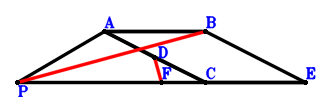
\(\because \) D is the midpoint of CA \(\therefore \small\overrightarrow{AD}=\dfrac{\small\overrightarrow{AC}}{2}\).\(\because \) EBAC is a parallelogram \(\therefore \small\overrightarrow{AE}=\small\overrightarrow{AB} + \small\overrightarrow{AC}\).\(\because \) F is the midpoint of EP \(\therefore \small\overrightarrow{AF}=\dfrac{\small\overrightarrow{AE}}{2} + \dfrac{\small\overrightarrow{AP}}{2}=\dfrac{\small\overrightarrow{AB}}{2} + \dfrac{\small\overrightarrow{AC}}{2} + \dfrac{\small\overrightarrow{AP}}{2}\).\(\because \) BA=AP \( \therefore\small\overrightarrow{AB}^{2} - \small\overrightarrow{AP}^{2}=0.\)In conclusion, \(\small\overrightarrow{BP} \cdot \small\overrightarrow{DF}=\left(- \small\overrightarrow{AB} + \small\overrightarrow{AP}\right) \cdot \left(- \small\overrightarrow{AD} + \small\overrightarrow{AF}\right)=\left(- \small\overrightarrow{AB} + \small\overrightarrow{AP}\right) \cdot \left(\dfrac{\small\overrightarrow{AB}}{2} + \dfrac{\small\overrightarrow{AP}}{2}\right)=- \dfrac{\small\overrightarrow{AB}^{2}}{2} + \dfrac{\small\overrightarrow{AP}^{2}}{2}=0\), that is, BP⊥FD.
Exercise 57： Let DBCP be a parallelogram. A is the midpoint of DE. BA=PA. Prove that CE⊥BP.
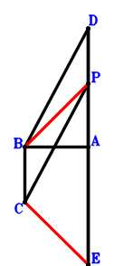
\(\because \) DBCP is a parallelogram \(\therefore \small\overrightarrow{AD}=\small\overrightarrow{AB} - \small\overrightarrow{AC} + \small\overrightarrow{AP}\).\(\because \) A is the midpoint of DE \(\therefore \small\overrightarrow{AE}=- \small\overrightarrow{AD}=- \small\overrightarrow{AB} + \small\overrightarrow{AC} - \small\overrightarrow{AP}\).\(\because \) BA=PA \( \therefore\small\overrightarrow{AB}^{2} - \small\overrightarrow{AP}^{2}=0.\)In conclusion, \(\small\overrightarrow{BP} \cdot \small\overrightarrow{EC}=\left(- \small\overrightarrow{AB} + \small\overrightarrow{AP}\right) \cdot \left(\small\overrightarrow{AC} - \small\overrightarrow{AE}\right)=\left(- \small\overrightarrow{AB} + \small\overrightarrow{AP}\right) \cdot \left(\small\overrightarrow{AB} + \small\overrightarrow{AP}\right)=- \small\overrightarrow{AB}^{2} + \small\overrightarrow{AP}^{2}=0\), that is, CE⊥BP.
Exercise 64： Let DBAC and DEPC be parallelograms. BA=AP. Prove that EA⊥BP.
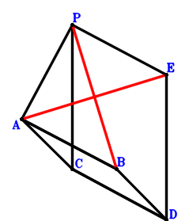
\(\because \) DBAC is a parallelogram \(\therefore \small\overrightarrow{AD}=\small\overrightarrow{AB} + \small\overrightarrow{AC}\).\(\because \) DEPC is a parallelogram \(\therefore \small\overrightarrow{AE}=\small\overrightarrow{AB} + \small\overrightarrow{AP}\).\(\because \) BA=AP \( \therefore\small\overrightarrow{AB}^{2} - \small\overrightarrow{AP}^{2}=0.\)In conclusion, \(\small\overrightarrow{AE} \cdot \small\overrightarrow{BP}=\small\overrightarrow{AE} \cdot \left(- \small\overrightarrow{AB} + \small\overrightarrow{AP}\right)=\left(- \small\overrightarrow{AB} + \small\overrightarrow{AP}\right) \cdot \left(\small\overrightarrow{AB} + \small\overrightarrow{AP}\right)=- \small\overrightarrow{AB}^{2} + \small\overrightarrow{AP}^{2}=0\), that is, EA⊥BP.
Exercise 89： Let DBFE be a trapezoid with BF//DE and BF=2DE. E, D are the midpoints of CP, CA, respectively. BA=AP. Prove that FA⊥BP.
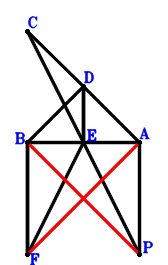
\(\because \) D is the midpoint of CA \(\therefore \small\overrightarrow{AD}=\dfrac{\small\overrightarrow{AC}}{2}\).\(\because \) E is the midpoint of CP \(\therefore \small\overrightarrow{AE}=\dfrac{\small\overrightarrow{AC}}{2} + \dfrac{\small\overrightarrow{AP}}{2}\).\(\because \) BF//DE and BF=2DE \(\therefore \small\overrightarrow{AF}=\small\overrightarrow{AB} - \small\overrightarrow{AC} + 2 \small\overrightarrow{AE}=\small\overrightarrow{AB} + \small\overrightarrow{AP}\).\(\because \) BA=AP \( \therefore\small\overrightarrow{AB}^{2} - \small\overrightarrow{AP}^{2}=0.\)In conclusion, \(\small\overrightarrow{AF} \cdot \small\overrightarrow{BP}=\small\overrightarrow{AF} \cdot \left(- \small\overrightarrow{AB} + \small\overrightarrow{AP}\right)=\left(- \small\overrightarrow{AB} + \small\overrightarrow{AP}\right) \cdot \left(\small\overrightarrow{AB} + \small\overrightarrow{AP}\right)=- \small\overrightarrow{AB}^{2} + \small\overrightarrow{AP}^{2}=0\), that is, FA⊥BP.
Exercise 93： Let EBDC be a parallelogram. A is the midpoint of PD. BA=PA. Prove that EC⊥BP.
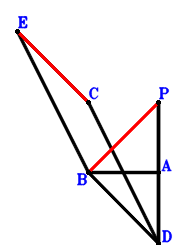
\(\because \) A is the midpoint of PD \(\therefore \small\overrightarrow{AD}=- \small\overrightarrow{AP}\).\(\because \) EBDC is a parallelogram \(\therefore \small\overrightarrow{AE}=\small\overrightarrow{AB} + \small\overrightarrow{AC} - \small\overrightarrow{AD}=\small\overrightarrow{AB} + \small\overrightarrow{AC} + \small\overrightarrow{AP}\).\(\because \) BA=PA \( \therefore\small\overrightarrow{AB}^{2} - \small\overrightarrow{AP}^{2}=0.\)In conclusion, \(\small\overrightarrow{BP} \cdot \small\overrightarrow{CE}=\left(- \small\overrightarrow{AB} + \small\overrightarrow{AP}\right) \cdot \left(- \small\overrightarrow{AC} + \small\overrightarrow{AE}\right)=\left(- \small\overrightarrow{AB} + \small\overrightarrow{AP}\right) \cdot \left(\small\overrightarrow{AB} + \small\overrightarrow{AP}\right)=- \small\overrightarrow{AB}^{2} + \small\overrightarrow{AP}^{2}=0\), that is, EC⊥BP.
Exercise 96： Let DAEC be a trapezoid with CE//DA and CE=2DA. D is the midpoint of BP. BA=PA. Prove that CE⊥BP.
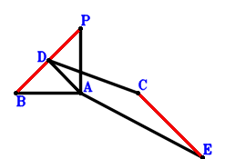
\(\because \) D is the midpoint of BP \(\therefore \small\overrightarrow{AD}=\dfrac{\small\overrightarrow{AB}}{2} + \dfrac{\small\overrightarrow{AP}}{2}\).\(\because \) CE//DA and CE=2DA \(\therefore \small\overrightarrow{AE}=\small\overrightarrow{AC} - 2 \small\overrightarrow{AD}=- \small\overrightarrow{AB} + \small\overrightarrow{AC} - \small\overrightarrow{AP}\).\(\because \) BA=PA \( \therefore\small\overrightarrow{AB}^{2} - \small\overrightarrow{AP}^{2}=0.\)In conclusion, \(\small\overrightarrow{BP} \cdot \small\overrightarrow{EC}=\left(- \small\overrightarrow{AB} + \small\overrightarrow{AP}\right) \cdot \left(\small\overrightarrow{AC} - \small\overrightarrow{AE}\right)=\left(- \small\overrightarrow{AB} + \small\overrightarrow{AP}\right) \cdot \left(\small\overrightarrow{AB} + \small\overrightarrow{AP}\right)=- \small\overrightarrow{AB}^{2} + \small\overrightarrow{AP}^{2}=0\), that is, CE⊥BP.
Exercise 100： Let DBAP be a parallelogram. BA=AP. Prove that DA⊥BP.
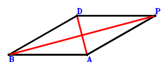
\(\because \) DBAP is a parallelogram \(\therefore \small\overrightarrow{AD}=\small\overrightarrow{AB} + \small\overrightarrow{AP}\).\(\because \) BA=AP \( \therefore\small\overrightarrow{AB}^{2} - \small\overrightarrow{AP}^{2}=0.\)In conclusion, \(\small\overrightarrow{AD} \cdot \small\overrightarrow{BP}=\small\overrightarrow{AD} \cdot \left(- \small\overrightarrow{AB} + \small\overrightarrow{AP}\right)=\left(- \small\overrightarrow{AB} + \small\overrightarrow{AP}\right) \cdot \left(\small\overrightarrow{AB} + \small\overrightarrow{AP}\right)=- \small\overrightarrow{AB}^{2} + \small\overrightarrow{AP}^{2}=0\), that is, DA⊥BP.
Exercise 107： Let D be the centroid of △BCP. E, D, A are collinear and EA=3ED. E is the midpoint of FC. BA=PA. Prove that FA⊥BP.
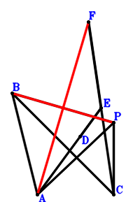
\(\because \) D is the centroid of △BCP \(\therefore \small\overrightarrow{AD}=\dfrac{\small\overrightarrow{AB}}{3} + \dfrac{\small\overrightarrow{AC}}{3} + \dfrac{\small\overrightarrow{AP}}{3}\).\(\because \) E, D, A are collinear and EA=3ED \(\therefore \small\overrightarrow{AE}=\dfrac{3 \small\overrightarrow{AD}}{2}=\dfrac{\small\overrightarrow{AB}}{2} + \dfrac{\small\overrightarrow{AC}}{2} + \dfrac{\small\overrightarrow{AP}}{2}\).\(\because \) E is the midpoint of FC \(\therefore \small\overrightarrow{AF}=- \small\overrightarrow{AC} + 2 \small\overrightarrow{AE}=\small\overrightarrow{AB} + \small\overrightarrow{AP}\).\(\because \) BA=PA \( \therefore\small\overrightarrow{AB}^{2} - \small\overrightarrow{AP}^{2}=0.\)In conclusion, \(\small\overrightarrow{AF} \cdot \small\overrightarrow{BP}=\small\overrightarrow{AF} \cdot \left(- \small\overrightarrow{AB} + \small\overrightarrow{AP}\right)=\left(- \small\overrightarrow{AB} + \small\overrightarrow{AP}\right) \cdot \left(\small\overrightarrow{AB} + \small\overrightarrow{AP}\right)=- \small\overrightarrow{AB}^{2} + \small\overrightarrow{AP}^{2}=0\), that is, FA⊥BP.
Exercise 109： Let D be the centroid of △PCB. A, D, E are collinear and 2AE=3DE. AB=PA. Prove that CE⊥PB.
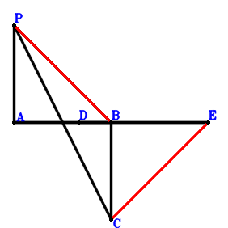
\(\because \) D is the centroid of △PCB \(\therefore \small\overrightarrow{AD}=\dfrac{\small\overrightarrow{AB}}{3} + \dfrac{\small\overrightarrow{AC}}{3} + \dfrac{\small\overrightarrow{AP}}{3}\).\(\because \) A, D, E are collinear and 2AE=3DE \(\therefore \small\overrightarrow{AE}=3 \small\overrightarrow{AD}=\small\overrightarrow{AB} + \small\overrightarrow{AC} + \small\overrightarrow{AP}\).\(\because \) AB=PA \( \therefore\small\overrightarrow{AB}^{2} - \small\overrightarrow{AP}^{2}=0.\)In conclusion, \(\small\overrightarrow{BP} \cdot \small\overrightarrow{CE}=\left(- \small\overrightarrow{AB} + \small\overrightarrow{AP}\right) \cdot \left(- \small\overrightarrow{AC} + \small\overrightarrow{AE}\right)=\left(- \small\overrightarrow{AB} + \small\overrightarrow{AP}\right) \cdot \left(\small\overrightarrow{AB} + \small\overrightarrow{AP}\right)=- \small\overrightarrow{AB}^{2} + \small\overrightarrow{AP}^{2}=0\), that is, CE⊥PB.
Exercise 111： Let E be the centroid of △BPC. F, E, A are collinear and FA=3FE. D is the midpoint of CA. BA=PA. Prove that BP⊥FD.
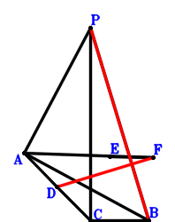
\(\because \) D is the midpoint of CA \(\therefore \small\overrightarrow{AD}=\dfrac{\small\overrightarrow{AC}}{2}\).\(\because \) E is the centroid of △BPC \(\therefore \small\overrightarrow{AE}=\dfrac{\small\overrightarrow{AB}}{3} + \dfrac{\small\overrightarrow{AC}}{3} + \dfrac{\small\overrightarrow{AP}}{3}\).\(\because \) F, E, A are collinear and FA=3FE \(\therefore \small\overrightarrow{AF}=\dfrac{3 \small\overrightarrow{AE}}{2}=\dfrac{\small\overrightarrow{AB}}{2} + \dfrac{\small\overrightarrow{AC}}{2} + \dfrac{\small\overrightarrow{AP}}{2}\).\(\because \) BA=PA \( \therefore\small\overrightarrow{AB}^{2} - \small\overrightarrow{AP}^{2}=0.\)In conclusion, \(\small\overrightarrow{BP} \cdot \small\overrightarrow{DF}=\left(- \small\overrightarrow{AB} + \small\overrightarrow{AP}\right) \cdot \left(- \small\overrightarrow{AD} + \small\overrightarrow{AF}\right)=\left(- \small\overrightarrow{AB} + \small\overrightarrow{AP}\right) \cdot \left(\dfrac{\small\overrightarrow{AB}}{2} + \dfrac{\small\overrightarrow{AP}}{2}\right)=- \dfrac{\small\overrightarrow{AB}^{2}}{2} + \dfrac{\small\overrightarrow{AP}^{2}}{2}=0\), that is, BP⊥FD.
Exercise 115： Let A be the midpoint of PD. AB=PA. Prove that PB⊥BD.
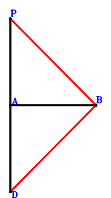
\(\because \) A is the midpoint of PD \(\therefore \small\overrightarrow{AD}=- \small\overrightarrow{AP}\).\(\because \) AB=PA \( \therefore\small\overrightarrow{AB}^{2} - \small\overrightarrow{AP}^{2}=0.\)In conclusion, \(\small\overrightarrow{BP} \cdot \small\overrightarrow{DB}=\left(- \small\overrightarrow{AB} + \small\overrightarrow{AP}\right) \cdot \left(\small\overrightarrow{AB} - \small\overrightarrow{AD}\right)=\left(- \small\overrightarrow{AB} + \small\overrightarrow{AP}\right) \cdot \left(\small\overrightarrow{AB} + \small\overrightarrow{AP}\right)=- \small\overrightarrow{AB}^{2} + \small\overrightarrow{AP}^{2}=0\), that is, PB⊥BD.
Exercise 130： Let D be the midpoint of BE and CA. F is the midpoint of CG and AE. BA=AP. Prove that BP⊥PG.
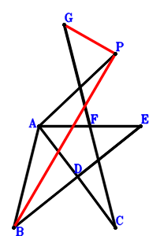
\(\because \) D is the midpoint of CA \(\therefore \small\overrightarrow{AD}=\dfrac{\small\overrightarrow{AC}}{2}\).\(\because \) D is the midpoint of BE \(\therefore \small\overrightarrow{AE}=- \small\overrightarrow{AB} + 2 \small\overrightarrow{AD}=- \small\overrightarrow{AB} + \small\overrightarrow{AC}\).\(\because \) F is the midpoint of AE \(\therefore \small\overrightarrow{AF}=\dfrac{\small\overrightarrow{AE}}{2}=- \dfrac{\small\overrightarrow{AB}}{2} + \dfrac{\small\overrightarrow{AC}}{2}\).\(\because \) F is the midpoint of CG \(\therefore \small\overrightarrow{AG}=- \small\overrightarrow{AC} + 2 \small\overrightarrow{AF}=- \small\overrightarrow{AB}\).\(\because \) BA=AP \( \therefore\small\overrightarrow{AB}^{2} - \small\overrightarrow{AP}^{2}=0.\)In conclusion, \(\small\overrightarrow{BP} \cdot \small\overrightarrow{GP}=\left(- \small\overrightarrow{AB} + \small\overrightarrow{AP}\right) \cdot \left(- \small\overrightarrow{AG} + \small\overrightarrow{AP}\right)=\left(- \small\overrightarrow{AB} + \small\overrightarrow{AP}\right) \cdot \left(\small\overrightarrow{AB} + \small\overrightarrow{AP}\right)=- \small\overrightarrow{AB}^{2} + \small\overrightarrow{AP}^{2}=0\), that is, BP⊥PG.
Exercise 142： Let DPAE be a trapezoid with PA//DE and PA=2DE. D, E are the midpoints of CA, CF, respectively. AB=PA. Prove that PB⊥BF.
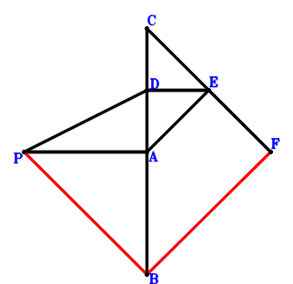
\(\because \) D is the midpoint of CA \(\therefore \small\overrightarrow{AD}=\dfrac{\small\overrightarrow{AC}}{2}\).\(\because \) PA//DE and PA=2DE \(\therefore \small\overrightarrow{AE}=\dfrac{\small\overrightarrow{AC}}{2} - \dfrac{\small\overrightarrow{AP}}{2}\).\(\because \) E is the midpoint of CF \(\therefore \small\overrightarrow{AF}=- \small\overrightarrow{AC} + 2 \small\overrightarrow{AE}=- \small\overrightarrow{AP}\).\(\because \) AB=PA \( \therefore\small\overrightarrow{AB}^{2} - \small\overrightarrow{AP}^{2}=0.\)In conclusion, \(\small\overrightarrow{BP} \cdot \small\overrightarrow{FB}=\left(- \small\overrightarrow{AB} + \small\overrightarrow{AP}\right) \cdot \left(\small\overrightarrow{AB} - \small\overrightarrow{AF}\right)=\left(- \small\overrightarrow{AB} + \small\overrightarrow{AP}\right) \cdot \left(\small\overrightarrow{AB} + \small\overrightarrow{AP}\right)=- \small\overrightarrow{AB}^{2} + \small\overrightarrow{AP}^{2}=0\), that is, PB⊥BF.
Exercise 144： Let DAPC be a trapezoid with CP//DA and CP=2DA. D is the midpoint of EC. AB=AP. Prove that EB⊥BP.
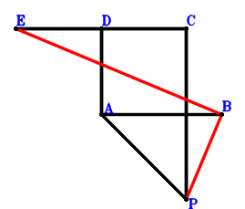
\(\because \) CP//DA and CP=2DA \(\therefore \small\overrightarrow{AD}=\dfrac{\small\overrightarrow{AC}}{2} - \dfrac{\small\overrightarrow{AP}}{2}\).\(\because \) D is the midpoint of EC \(\therefore \small\overrightarrow{AE}=- \small\overrightarrow{AC} + 2 \small\overrightarrow{AD}=- \small\overrightarrow{AP}\).\(\because \) AB=AP \( \therefore\small\overrightarrow{AB}^{2} - \small\overrightarrow{AP}^{2}=0.\)In conclusion, \(\small\overrightarrow{BP} \cdot \small\overrightarrow{EB}=\left(- \small\overrightarrow{AB} + \small\overrightarrow{AP}\right) \cdot \left(\small\overrightarrow{AB} - \small\overrightarrow{AE}\right)=\left(- \small\overrightarrow{AB} + \small\overrightarrow{AP}\right) \cdot \left(\small\overrightarrow{AB} + \small\overrightarrow{AP}\right)=- \small\overrightarrow{AB}^{2} + \small\overrightarrow{AP}^{2}=0\), that is, EB⊥BP.
Exercise 146： Let DAPC be a parallelogram. E is the midpoint of DA and FC. AB=AP. Prove that FB⊥BP.
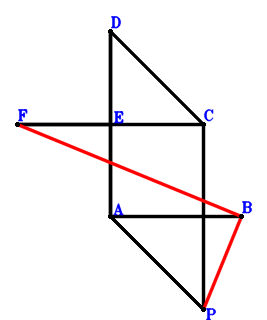
\(\because \) DAPC is a parallelogram \(\therefore \small\overrightarrow{AD}=\small\overrightarrow{AC} - \small\overrightarrow{AP}\).\(\because \) E is the midpoint of DA \(\therefore \small\overrightarrow{AE}=\dfrac{\small\overrightarrow{AD}}{2}=\dfrac{\small\overrightarrow{AC}}{2} - \dfrac{\small\overrightarrow{AP}}{2}\).\(\because \) E is the midpoint of FC \(\therefore \small\overrightarrow{AF}=- \small\overrightarrow{AC} + 2 \small\overrightarrow{AE}=- \small\overrightarrow{AP}\).\(\because \) AB=AP \( \therefore\small\overrightarrow{AB}^{2} - \small\overrightarrow{AP}^{2}=0.\)In conclusion, \(\small\overrightarrow{BP} \cdot \small\overrightarrow{FB}=\left(- \small\overrightarrow{AB} + \small\overrightarrow{AP}\right) \cdot \left(\small\overrightarrow{AB} - \small\overrightarrow{AF}\right)=\left(- \small\overrightarrow{AB} + \small\overrightarrow{AP}\right) \cdot \left(\small\overrightarrow{AB} + \small\overrightarrow{AP}\right)=- \small\overrightarrow{AB}^{2} + \small\overrightarrow{AP}^{2}=0\), that is, FB⊥BP.
Exercise 148： Let CAPE be a parallelogram. D is the midpoint of FE and AC. AB=AP. Prove that FB⊥BP.
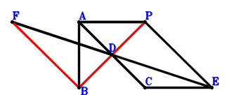
\(\because \) D is the midpoint of AC \(\therefore \small\overrightarrow{AD}=\dfrac{\small\overrightarrow{AC}}{2}\).\(\because \) CAPE is a parallelogram \(\therefore \small\overrightarrow{AE}=\small\overrightarrow{AC} + \small\overrightarrow{AP}\).\(\because \) D is the midpoint of FE \(\therefore \small\overrightarrow{AF}=\small\overrightarrow{AC} - \small\overrightarrow{AE}=- \small\overrightarrow{AP}\).\(\because \) AB=AP \( \therefore\small\overrightarrow{AB}^{2} - \small\overrightarrow{AP}^{2}=0.\)In conclusion, \(\small\overrightarrow{BP} \cdot \small\overrightarrow{FB}=\left(- \small\overrightarrow{AB} + \small\overrightarrow{AP}\right) \cdot \left(\small\overrightarrow{AB} - \small\overrightarrow{AF}\right)=\left(- \small\overrightarrow{AB} + \small\overrightarrow{AP}\right) \cdot \left(\small\overrightarrow{AB} + \small\overrightarrow{AP}\right)=- \small\overrightarrow{AB}^{2} + \small\overrightarrow{AP}^{2}=0\), that is, FB⊥BP.
Exercise 173： Let CABD be a parallelogram. CP⊥PB. AB=PA. Prove that AD⊥PB.